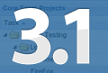
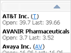
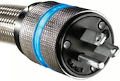

Ext JS 3.1: Massive memory improvements, TreeGrid, and more
December 17, 2009 by Jamie Avins | 51 Comments »

On behalf of the Ext Team, I am extremely excited to announce the final release of Ext JS 3.1. With this release we rededicate ourselves to making Ext JS the best it can be, in both features and performance.
Creating a Custom Ext GWT Component
November 23, 2009 by Darrell Meyer | 9 Comments »

Creating custom Web components can prove challenging without a good foundation. Fortunately, the Ext GWT framework contains a Component API that provides the ability to quickly and easily create custom components while using Java. This post will walk you through the steps needed to create our ContentScroller – an Ext GWT UX component.
Advanced Plugin Development with Ext JS
November 11, 2009 by Nigel White | 27 Comments »

When creating a cross browser RIA, choosing a framework with a plethora of components is where most of us look first. Selecting a framework that enables you the flexibility to enhance and expand its offering becomes very important. Fortunately, Ext JS has all the rich UI functionality that most applications require coupled with a vibrant community creating impressive extensions. Ext’s elegant design allows us to explore our creativity by adding new features to existing widgets.